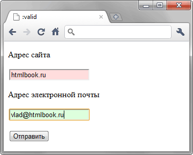

Псевдокласс :valid
Применяется к полям формы, содержимое которых проходит проверку в браузере на соответствие указанному типу. Например, для type="number" вводится число, а не буквы, для type="email" корректный адрес электронной почты.
Синтаксис
input:valid { ... }Пример
<!DOCTYPE html>
<html>
<head>
<meta charset="utf-8">
<title>:valid</title>
<style>
input:invalid {
background: #fdd; /* Красный цвет фона */
}
input:valid {
background: #dfd; /* Зеленый цвет фона */
}
</style>
</head>
<body>
<form>
<p>Адрес сайта</p>
<p><input type="url" required></p>
<p>Адрес электронной почты</p>
<p><input type="email" required></p>
<p><input type="submit" value="Отправить"></p>
</form>
</body>
</html>В данном примере корректно заполненные поля формы обозначаются зеленым фоном, а некорректные красным. Результат примера в Chrome показан на рис. 1.

Рис. 1. Использование псевдокласса :valid
Спецификация
| Спецификация | Статус |
|---|---|
| WHATWG HTML Living Standard | Живой стандарт |
| HTML5 | Возможная рекомендация |
| Selectors Level 4 | Рабочий проект |
| CSS Basic User Interface Module Level 3 | Рабочий проект |
Браузеры
| Internet Explorer | Chrome | Opera | Safari | Firefox |
| 10 | 10 | 10 | 1.3 | 4 |
| Android | Firefox Mobile | Opera Mobile | Safari Mobile |
| 2.1 | 4 | 10 | 5 |